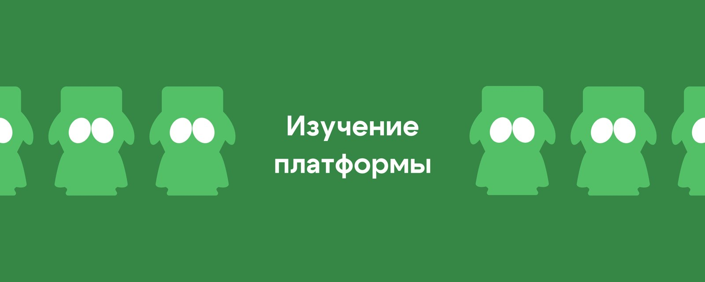
3 урок. Изучение платформы
Что такое Fansly?
Fansly — это быстрорастущая платформа для размещения эксклюзивного контента, ставшая популярной благодаря лояльной политике и продвинутым функциям взаимодействия с аудиторией. Здесь работают вебкам-модели, инфлюенсеры, а также авторы откровенного и нишевого контента.
Fansly во многом напоминает Instagram или TikTok, только с платным доступом. Пользователи могут выкладывать:
- фото,
- видео,
- сторис (истории с ограниченным временем доступа),
- проводить прямые эфиры.
Основной инструмент заработка — это подписки, а также индивидуальные продажи через личные сообщения. Именно там строится ключевая коммуникация с фанатами и происходит большая часть монетизации.
На Fansly, в отличие от OnlyFans, есть гибкая система уровней подписки и больше визуальных возможностей для кастомизации страницы.
💸 Как зарабатывают на Fansly
Основной источник дохода модели — не только подписки, а продажа персонализированного контента. Это может быть как заранее подготовленный материал, который нигде не выкладывался, так и индивидуальные видео, снятые по запросу конкретного фаната (Кастом видео).
Весь процесс продаж происходит в личных сообщениях. Именно поэтому моделям нужны операторы — те, кто возьмут на себя ведение переписок, рассылки, и грамотную продажу контента.
Чтобы эффективно работать, нужно разобраться в логике платформы и знать, как пользоваться её основными функциями.
*Эта памятка — твоя шпаргалка. Сохрани её, она пригодится.
Варианты продаж:
1. Секстинг
Секстинг — это сексуальная переписка с фанатом, построенная по сценарию. В идеале у фаната должно сложиться ощущение, что модель прямо сейчас возбуждена и снимает что-то специально для него. (в лайв реживе)
Контент в таких переписках — короткие видео (1–2 минуты), подобранные из заранее подготовленных секстпаков. Именно за счёт секстинга формируется основной заработок. Про это будет отдельный блок и более подробный.
2. Продажа контента (не секстинг)
Иногда фан сам пишет и просит конкретное видео или фото:
“Do you have any anal video?”
В этом случае ты подбираешь нужный файл из архива и продаёшь его за адекватную цену — по политике агентства.
Важно: это должны быть материалы, не использующиеся в секстинге, и которые не нарушают внутренние правила.
3. Продажа кастомов
Кастом — это видео или фото, сделанные по сценарию фаната. Они стоят дороже и дают хороший доход, но требуют координации с моделью.
Перед продажей ознакомься с легендой и узнай о границах модели. Если мембер хочет видеть какую-то особенную одежду/игрушку/лак для ногтей и т.д. — уточни у тимлида наличие этого у модели. Простой пример: фан запрашивает видео с определённой одеждой или предметом, вы договариваетесь, он платит, а потом оказывается, что у модели этого реквизита нет.
В этом случае фан имеет право запросить возврат через поддержку, а сумма будет вычтена из вашей зарплаты.
Примерный срок выполнения кастомов — 7 дней, поэтому будьте готовы взять ответственность за ожидание мембера.
Кастомы — это не просто «продал и забыл», а работа, требующая внимания к деталям.
Разделы Fansly
На главной странице отображаются уведомления, активность подписчиков и доступ к основным функциям (нажимаем на аватарку модели)
Основные разделы меню и их роль в работе:
- Profile — cтраница модели.
- Subscriptions — список активных, отменённых и завершённых подписок.
- Vault — хранилище всех загруженных фото, видео и сторис. Используется при продаже контента и секстинге.
- Messages — переписки с фанатами, место, где происходят все продажи и выстраиваются отношения.
- Notifications — уведомления о новых подписках, покупках, лайках и сообщениях.
- Creator Dashboard - для рассылок
- Earnings — сводка доходов: продажи, чаевые, кастомы, подписки и т.д.
- Settings — настройки страницы, профиля и уведомлений.
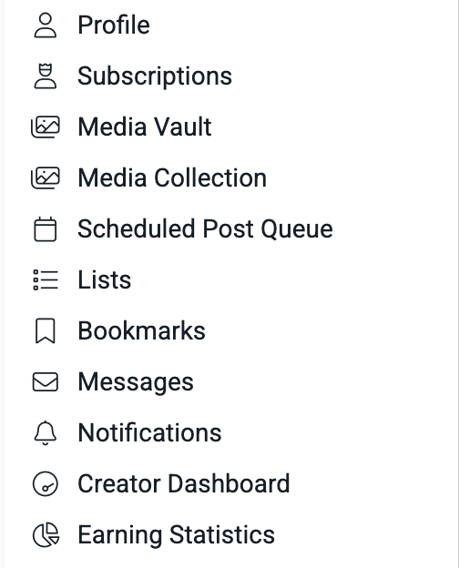
Важно: чем лучше ты ориентируешься в интерфейсе, тем быстрее и увереннее работаешь. Это напрямую влияет на эффективность и твой доход.
❗Важный раздел Notification - уведомления
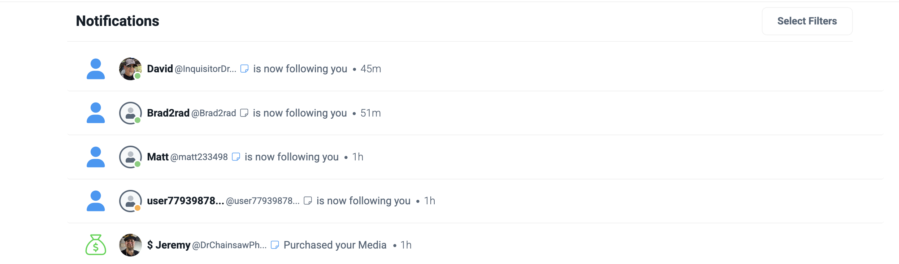
Здесь отображается вся активность фанатов — кто лайкнул, сохранил, подписался или посмотрел контент.
Используй эту информацию как повод для общения: даже малейшее действие — отличный триггер для начала диалога.
Важно:
не игнорируй активность — каждый клик может стать первой ступенью к продаже.
Как использовать в работе разные уведомления:
- Новый подписчик
Как только видишь новый follow — переходи в профиль фаната. Изучи описание, аватар, ник — зацепись за деталь, чтобы начать диалог персонально. Чем теплее заход, тем выше шанс на отклик. Поблагодари за фоллоу и задай ему вопрос после рассылки.
В самом начале, сразу после подписки каждый фанат получает приветственное сообщение с фото модели и какой-то подписью. Если фанат на это сообщение не отвечает, то нужно написать ему что-то продолжая ту же линию, что и в первом сообщении. В этот момент очень важно использовать ту дополнительную информацию, которую можно найти на странице фаната, а также то, с каким контентом и как он взаимодействовал на странице модели. Последнее можно посмотреть в разделе Notifications.
- Покупка
Если фанат что-то купил (во время твоей смены или после "простоя") — обязательно обработай покупку. Напиши «Спасибо за покупку», задай вопрос: понравилось ли, что именно зацепило. Это идеальный повод начать разговор и мягко подвести к следующей продаже.
- Чаевые
Точно так же — поблагодари за чаевые, уточни, к чему они были: это реакция на пост или намёк на что-то ещё?
Можно отправить мини-подарок или бонусный контент — это повышает лояльность и формирует привязку.
- Комментарии
Смотри, под каким постом фанат оставил комментарий — это помогает понять, что ему понравилось. Если, например, он отметил фото с акцентом на попу — можешь обыграть это в сообщении:
“Кажется, у нас тут фанат моей большой попки? 🤭”
- Лайки
Лайки — это тихий сигнал интереса. Посмотри, что именно лайкает фанат, и используй это в диалоге. Также фиксируй в заметках: это поможет в дальнейшем подобрать контент или сделать персонализированную рассылку.
💌 Массовые рассылки
1. Удаляем старую рассылку
Creator Dashboard → Messages → Sent Broadcast Messages
Удаляем предыдущую рассылку, если она ещё висит.
2. Создаём новую рассылку
- Нажимаем на значок «✉️» в разделе Messages.
- В разделе Excluded Lists исключаем списки:
- "бомжи"
- "no mass dm"
- "кастом"
- Ставим галочки, как на скрине:
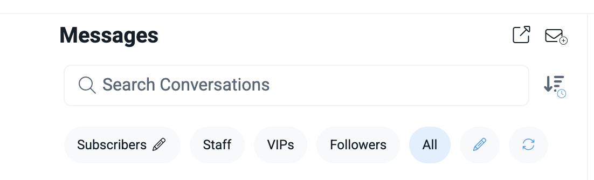
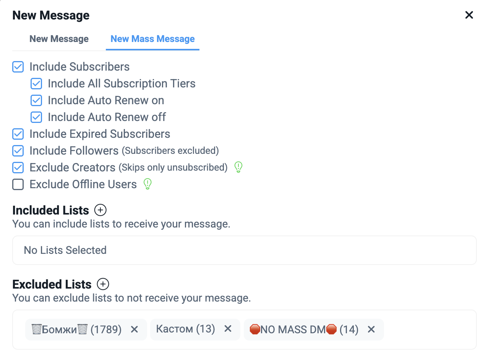
Как прочитать непрочитанные сообщения?
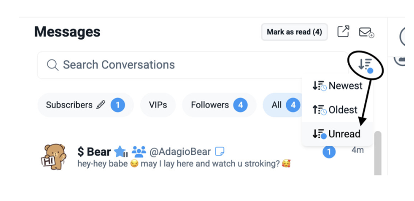
Заметки, списки - работа с сообщениями
Все списки нужны для удобной обработки и разделения фанатов по категориям. Также списки напрямую связаны с массовыми рассылками. Поэтому следить за правильностью заполнения списков очень важно!
- Все заметки ведём в едином стиле.
- Никнейм фаната обязательно заменяем на его имя.
- Если мембер оплатил бандл или потратил хотя бы $1 — в ник добавляем символ $ (около имени).
- Если не открыл бандл с первого раза — в нике пишем ХЗ (чтобы следующие операторы понимали на кого делать больший фокус)
- Если фанат с пометкой "ХЗ" снова ничего не открыл (после двух попыток) — помечаем как "бомж" и добавляем в соответствующий список.
- Не нужно засыпать мембера спамом — 1–2 сообщения достаточно. Главное — вовлечь его вопросом.
Эмоциональное состояние мембера показывается смайликами -
❌ - бомж; 🥵 - полная противоположность, открыто покупает, проявляет интерес к модели, откровенный кит; 🥶 - морозится, аналогия с Хзшником, сливается с покупок, может иногда тратить небольшие суммы; 😴 - раннее совершал неплохие траты, был активным, но в последнее время не очень активный;
Модель поведения в зависимости от состояния:
❌ - обыкновенный бомж, ноль внимания, также имеет место включать их в рассылки платного контента
🥵 - максимальное общение и продажи,вовлекаем в диалог и все больше привязываем к образу модели, КИТЫ и ВИПЫ обычно находятся в этой категории, так что проблем с общением у вас возникнуть не должно, с этой папкой очень важно вести заметки о каждом шаге, чтобы каждый оператор могу полноценно использовать их в диалоге
🥶 - говорит о том, что нужно лучше узнать предпочтения, сделать упор на это и попробовать продажу именно тем, что фану интереснее больше всего, если дальше продолжает морозить как и с ХЗ мембер переходит в бомжи. Важно прочитать диалог сверху, посмотрев на обработку прошлого чаттера, и полностью поменять подход
😴 - максимальное общение без быстрых продаж, расскажите ему историю дня, покидайте лайв фоток в общении, возвращаем его внимание к модели с помощью живости
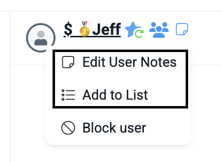
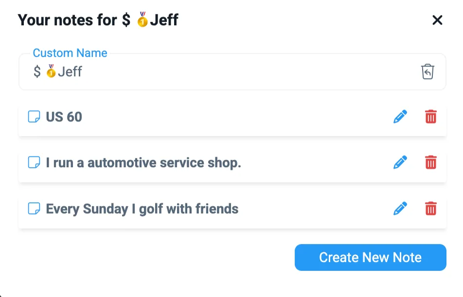
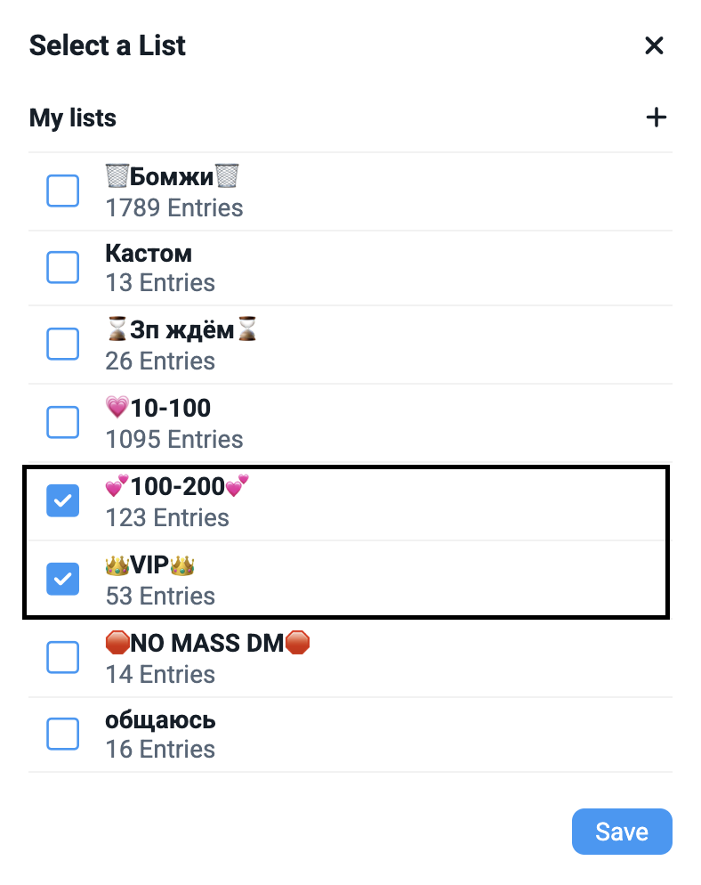
Vault - хранилище контента
Здесь собран весь контент модели: фото, видео, секстпаки и материалы для рассылок.
Перед началом работы важно внимательно изучить хранилище — это поможет понимать, какие материалы доступны и что можно предлагать фанатам.
Обрати внимание:
- В хранилище находятся секстпаки, которые используются при переписке и секстинге. Смешивать контент за одну продажу из разных папок - нельзя!
- Есть отдельная папка mass dm — именно из неё выбираются фото для массовых рассылок.
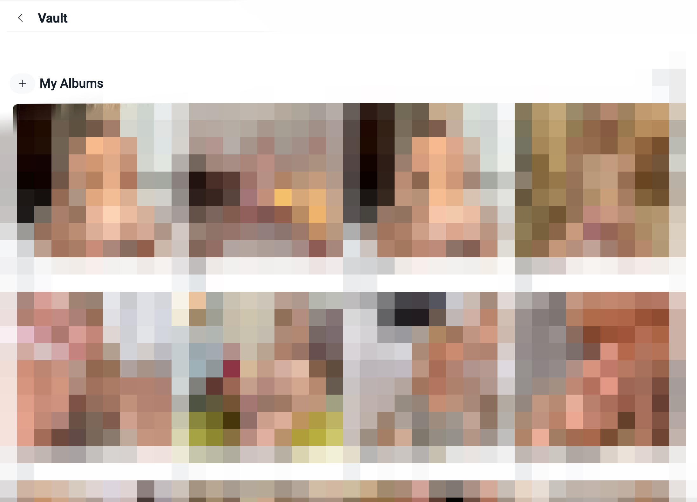
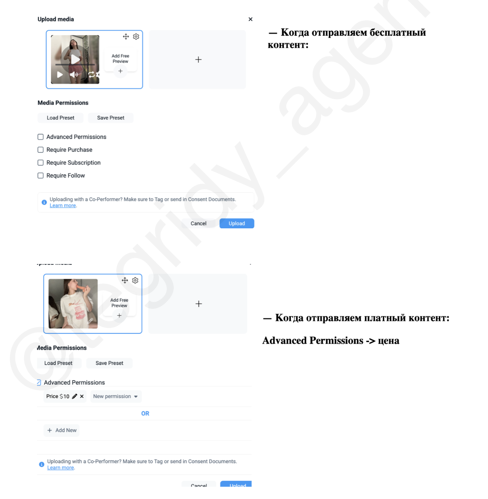
Списки (подробнее)
No Mass DM
- Это список фанатов с повышенным вниманием и индивидуальным подходом. Чаще всего — это крупные донаторы, активные мемберы, потенциальные киты.
Кто попадает в этот список:
- Фанаты, сделавшие покупки на $500+
- Те, с кем идёт частое личное общение
- Перспективные мемберы, которые проявляют интерес и реагируют на вовлечение
Как с ними работать:
- Прописываем им вручную по ходу смены
- Если фан не ответил в твою смену — удаляй сообщения от предыдущего сменщика, чтобы не было спама
- Не рассылаем массовые сообщения — только персонализированные
- Общаемся уважительно, вовлечённо, без давления.
💡 Эти фанаты — чувствительные к спаму. Один неудачный заход — и можно потерять лояльность (и $).
Бомжи
- Добавляем тех фанов, которые после нескольких попыток общения не проявили признаков адекватности (бесконечно шлют дикпики, отвечают невпопад, не отвечают на вопросы, не покупают после нескольких попыток)
- Исключаем при массовой рассылке.
Кастом
- Добавляем с меткой “переговоры” в нике, если вы греете фана на кастом и доводите до продажи за неделю. В это время фан закреплён за вами, не забывайте о нём.
Также добавляем с пометкой “ждет кастом” в случае, когда фан уже оплатил кастом контент - После того как отправили кастом , убираем его из листа
- Исключаем при массовой рассылке.
VIP
- В этот список добавляем фанатов, потративших 300$+ или тех, кто регулярно проявляет активность, показывает внимание к модели и вовлечён в общение — даже если не платит много прямо сейчас.
- Общение ведём по всем правилам из раздела «Работа с постоянниками», но с усилением: больше персонального внимания, бонусов, индивидуальных сообщений и небольших «подарков».
Главное — создать у фаната ощущение, что он «не как все». Общение с ним должно быть тёплым, интимным, будто между вами есть особая связь, недоступная другим. Как будто у вас — личная история и настоящая симпатия.
Терминология Fansly
Как и в любой сфере, у Fansly есть свой сленг. Ниже собраны самые частые термины, чтобы ты не терялась в общении и обучении.
Это не полный список. Если встретишь что-то непонятное — спроси тимлида.
Общее:
| Слово | Что значит |
| Fansly | Платформа, на которой мы работаем |
| Following | Люди, на которых подписана модель |
| Fan / Sub / Мембер | Подписчик, поклонник |
| Expired fan | Подписка закончилась, но человек всё ещё может писать и лайкать |
| Lists | Списки подписчиков (для рассылок и сегментации) |
| Media count | Количество загруженного медиа на странице |
| Stats | Статистика (доходы, просмотры, активность) |
| Vault | Хранилище контента модели |
| Creator | Модель (создатель страницы) |
Контент:
| Слово | Что значит |
| BJ (Blowjob) | Минет |
| BG | Boy/Girl — парный контент с мужчиной |
| GG | Girl/Girl — парный контент с девушкой |
| Bras | Бюстгальтер |
| Lingerie | Нижнее белье |
| Outfit | Лук / образ / прикид |
| Custom | Видео на заказ под запрос фаната |
| Bundle | Подборка фото/видео, собранная в набор |
| Deepthroat | Глубокий минет |
| DP | Double Penetration — двойное проникновение |
| JOI | Jerk Off Instruction — инструкция по мастурбации |
| SPH | Small Penis Humiliation — жанр унижения маленького члена |
| Pic | Картинка / фото |
| Pinned Post | Закреплённый пост на странице |
| Scheduled | Запланированный (пост, сторис и т.д.) |
| BBC | big black cock :) |
Продажи:
| Слово | Что значит |
| Fundraiser | Сбор средств (донат на цель, подарок и т.д.) |
| PPV | Pay Per View — платный доступ к сообщению или контенту |
| Re-Bill | Автопродление подписки |
| Tips | Чаевые или предоплата за что-то |
| Upsell | Допродажа — предложение купить ещё что-то после первой покупки |
| CrossSell | Перекрёстная продажа (на другой продукт, услугу или модель) |
| Refund | Возврат средств (чаще по жалобе фаната — важно отслеживать) |